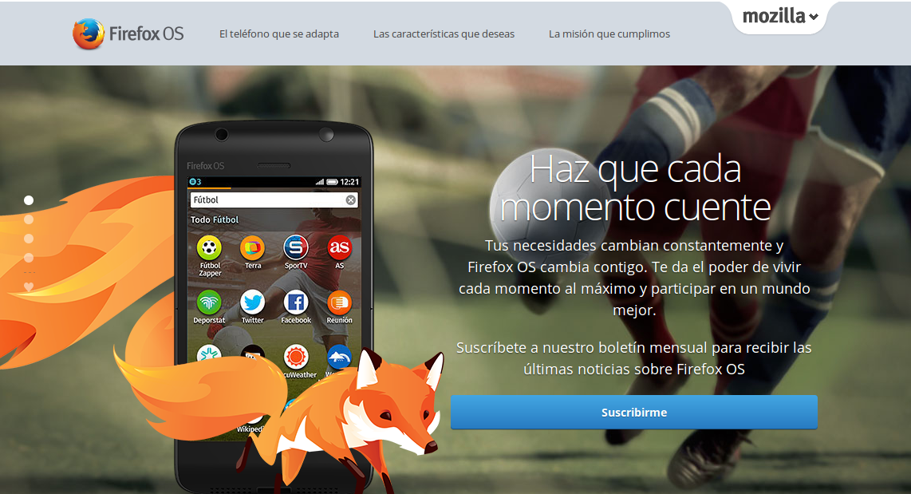
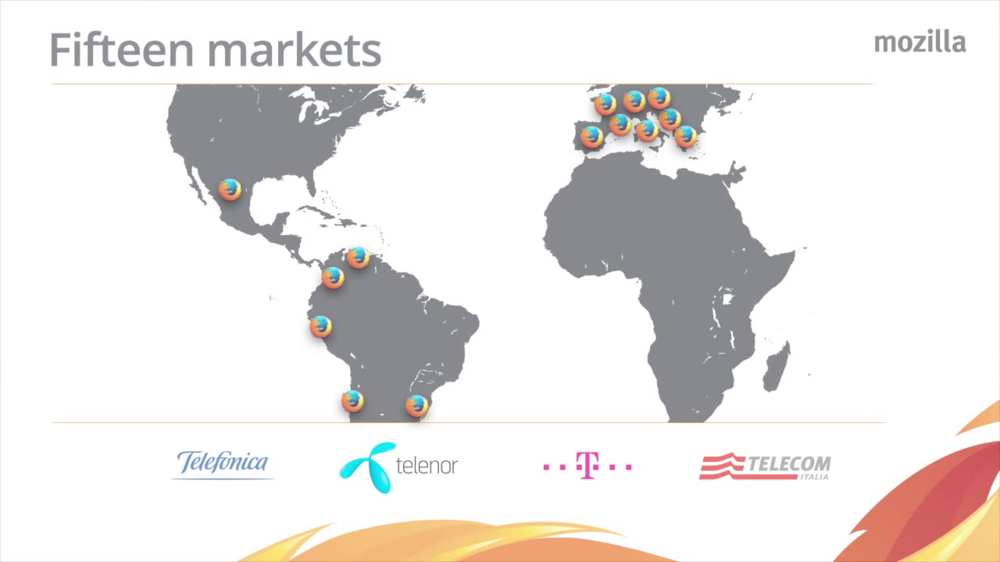
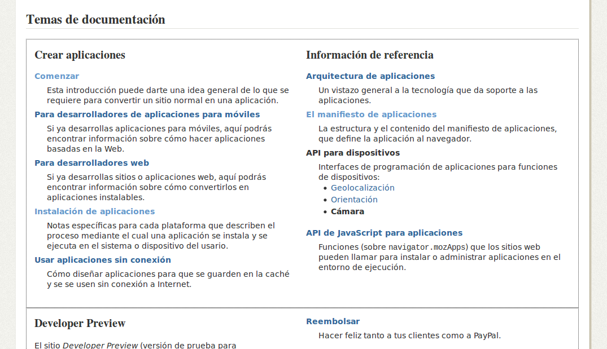
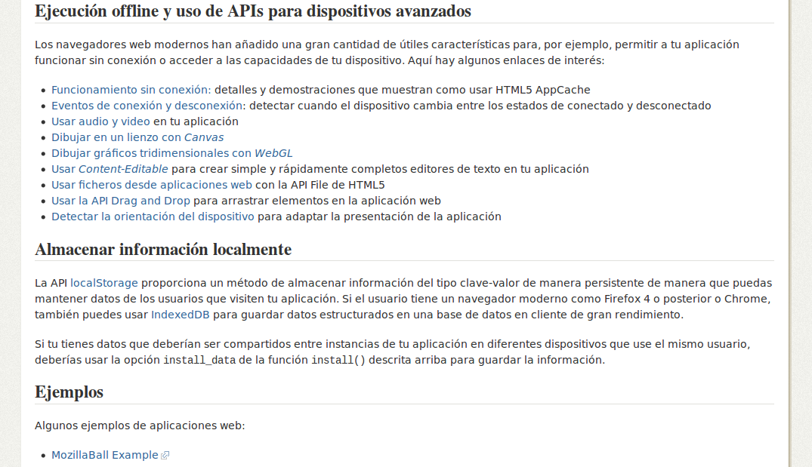
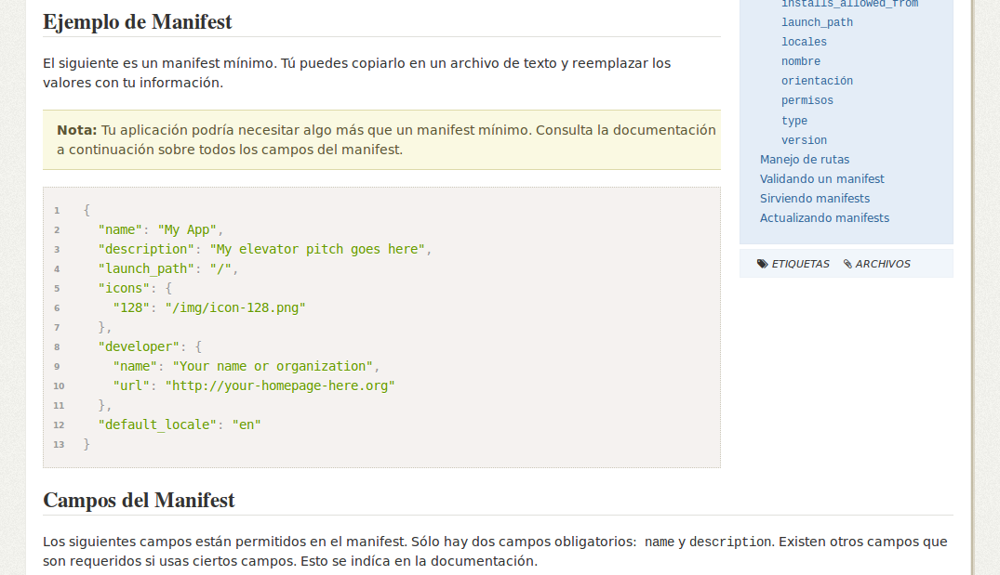
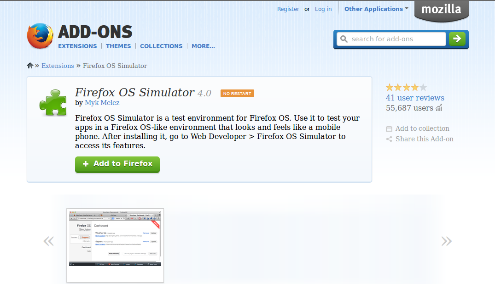
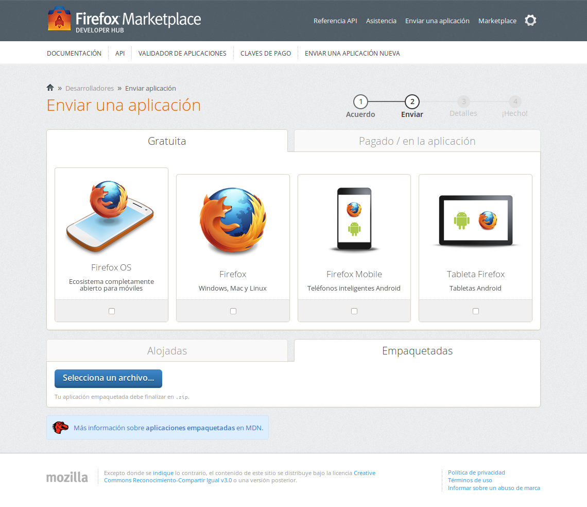
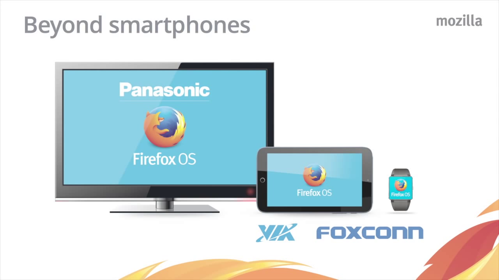
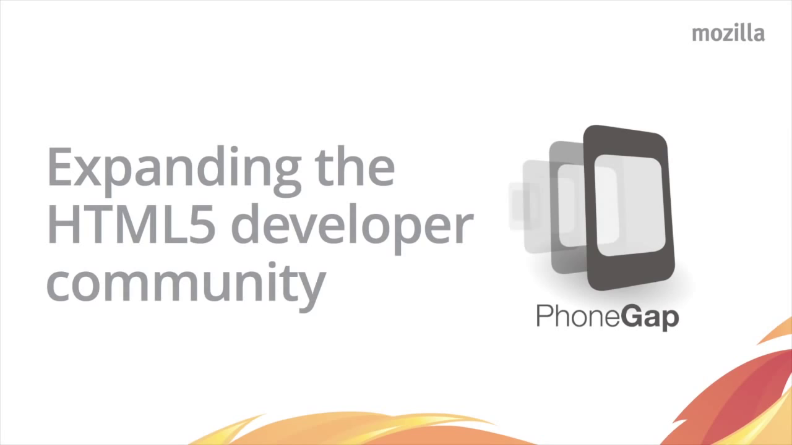

Desarrollo de aplicaciones en Firefox OS
Desarrollo de aplicaciones en Firefox OS

firefox.com/os
HTML5 para el mundo móvil

¿Qué hace que una aplicación sea genial?
Perú: parte de las Olas del 2013

Desarrollo de aplicaciones en Firefox OS
Paso 1: Crea tu aplicación web con HTML5, CSS y JavaScript

developer.mozilla.org
Paso 2: Evalúa qué componentes deben ser offline.

developer.mozilla.org

developer.mozilla.org

addons.mozilla.org

marketplace.firefox.com
Más allá de los smartphones

Nuevas alianzas para desarrollo
